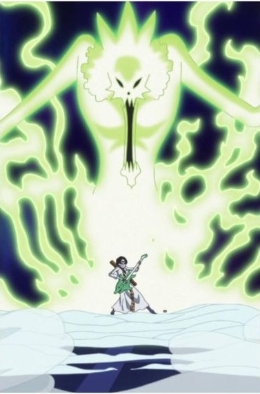

- O Poder Fundamental é a ressurreição
- O termo "Yomi" refere-se ao mundo dos mortos na mitologia japonesa. A função básica da fruta é permitir que a alma do usuário retorne ao seu corpo físico após a morte biológica, concedendo-lhe uma segunda vida.
- O "Limbo": Após morrer, a alma do usuário ganha a capacidade de vagar pelo mundo e deve encontrar seu corpo original para reabitá-lo.
+ Caso atípico: Durante o momento de morte de Brook(usuário atual), demorou um ano para encontrar seu navio no Triângulo Florian devido à névoa densa. Quando achou o corpo, ele já era apenas um esqueleto. Como a fruta mantém a força vital na alma, ele consegue "viver" mesmo sem órgãos, músculos ou pele.

 - Verdadeiro poder: Durante os dois anos de treinamento, Brook descobriu que o verdadeiro poder da fruta não é apenas "viver de novo", mas o controle total da alma. Isso permitiu novas habilidades, como:
- Verdadeiro poder: Durante os dois anos de treinamento, Brook descobriu que o verdadeiro poder da fruta não é apenas "viver de novo", mas o controle total da alma. Isso permitiu novas habilidades, como:+ Projeção Astral: Ele pode separar sua alma do corpo esquelético para atravessar paredes e espionar, mantendo-se visível como uma forma fantasmagórica.
+ Energia do Submundo (Frio Glacial): Brook consegue invocar o "frio do submundo" através de sua alma e transferi-lo para sua espada (Soul Solid). Isso permite que ele congele o que corta.
+ Dano de Alma: Ele pode ferir seres que dependem de manipulação de almas, como os Homies da Big Mom, já que sua alma tem uma "vibração" muito forte e independente.
+ Imortalidade Relativa: Enquanto seus ossos não forem completamente destruídos, Brook é quase indestrutível, podendo "remontar" o corpo se for decapitado, por exemplo. 